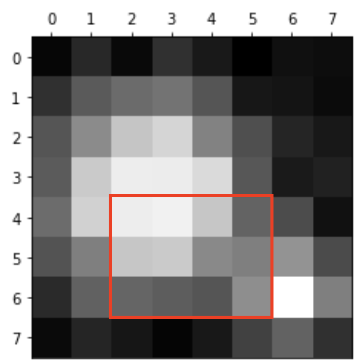
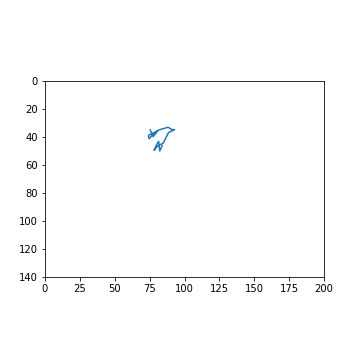

Project groups
From next week you will be working on a project in groups of 3-4 students.
It is up to YOU to choose your team members and if possible you should do this during today’s workshop.
Submit the names of your team members via the link on Moodle.
Workshop 5: Image Segmentation¶
Image segmentation is the process of partitioning a image or video into regions, typically for the purpose of identifying specific objects or features. For example, identifying different tissue types in medical images, or distinguishing objects in astronomical images.

In this workshop, you will use image segmentation techniques to reproduce part of a famous experiment - Jean Perrin’s confirmation of Einstein’s Brownian motion equation.
In this experiment, tiny particles suspended in water are observed through a microscope. Due to collisions with water molecules, the particles appear to move in a random and erratic fashion known as Brownian motion. In 1908 Jean Baptiste Perrin experimentally validated Einstein’s kinetic theory of Brownian motion, providing the first direct evidence of the atomic nature of matter and enabling the calculation of an estimate of Avogadro’s number.
Our goal is to use image segmentation to track the x- and y- coordinates of one of the particles in the video below.
We will perform the following steps to each frame of the video:
Read the image data into a numpy array
Crop the image so that only one particle is in view
Threshold the image to distinguish particle from background
Identify the particle x- and y-coordinates using segmentation techniques
Store the co-ordinates in an array
The key component of this process is step 3, so we will study this first using a small sample image.
What you’ll learn
How to represent image data an array
How to extract data from the array using slicing
How to use Python libraries to perform image segmentation
Images: loading and indexing¶
bw.png is an 8x8 pixel image.
{kind=link}

The image contains two particles, and our goal is to identify the larger one and determine its co-ordinates.
An image is essentially a 2-dimensional array where each element represents the colour intensity of each pixel.
First we import the module matplotlib.image and use the imread function to convert it to an array.
import numpy as np
import matplotlib.pyplot as plt
import matplotlib.image as mpimg # import the image module
A = mpimg.imread("bw.png") # read the image into an array A
A = np.mean(A, axis=2)
print(np.round(A, 2)) # print x, rounding to 2 d.p.
[[0.27 0.35 0.27 0.37 0.31 0.25 0.29 0.29]
[0.37 0.46 0.51 0.53 0.45 0.31 0.3 0.28]
[0.45 0.6 0.75 0.8 0.57 0.43 0.34 0.31]
[0.46 0.76 0.9 0.89 0.82 0.45 0.32 0.34]
[0.51 0.79 0.9 0.92 0.75 0.49 0.43 0.29]
[0.44 0.56 0.75 0.76 0.59 0.56 0.62 0.42]
[0.36 0.48 0.49 0.47 0.45 0.61 1. 0.56]
[0.28 0.34 0.31 0.26 0.31 0.4 0.49 0.37]]
Upload the file
bw.pngand use the above code to read it into an array. (First click the link above to download it to your computer).
The variable A stores a numpy array containing the image’s pixel data. Lets first investigate a basic property of this array: its shape. Since shape is a property of a numpy array object, we can access it using dot notation: A.shape:
print(A.shape)
(8, 8)
This outputs the size of each dimension of the array, in this case 8 rows and 8 columns.
In order to access specific elements of the array, we can use indexing and bracket ([...]) syntax. For example, the following expression gives the first element of the first row of our array: A[0, 0].
print(A[0, 0])
0.26764706
Remember that python starts counting from 0! This means that the first element is at index 0, the second is at index 1 and so on. For a dimension of size 8, the maximum index value is 7. Try using an index value of 8 and see what happens:
print(A[0, 8])
---------------------------------------------------------------------------
IndexError Traceback (most recent call last)
/tmp/ipykernel_7833/161630308.py in <module>
----> 1 print(A[0, 8])
IndexError: index 8 is out of bounds for axis 1 with size 8
We can also access more than one element at a time! To do that we need the colon : syntax. On its own, : is used to access every element for a given row or column. So the following will give us every element in the 3rd column: A[:, 2]
print(A[:, 2])
[0.2735294 0.5088235 0.74705887 0.89705884 0.89705884 0.75
0.49411765 0.30588236]
Finally, we can use the : syntax to access a range of values like so: start_idx:stop_idx. This is known as slicing. The value at start_idx is included but the value at stop_idx is excluded. The following will give us the 4th to 7th values of the 2nd row: A[1, 3:7]
print(A[1, 3:7])
[0.5323529 0.44705883 0.30882353 0.30294117]
Use slice indexing to access the following cropped area of the image stored in
A:
{kind=link}
# Adjust these index values to isolate the red box
A_cropped = A[0:8, 0:8]
plt.imshow(A_cropped,
cmap=plt.get_cmap('Greys_r') )
# NB This line ensures that the colour scaling remains consistent regardless of cropping
plt.clim(np.amin(A), np.amax(A))
You can learn more about indexing and slicing, including more advanced syntax here
Thresholding¶
The next step is to threshold the image, generating an array whose values are 1 for pixels above the threshold, and 0 for pixels below the threshold. The threshold value should of course be between the minimum and maximum values in this array:
print("Min:", np.min(A))
print("Max:", np.max(A))
Min: 0.25
Max: 1.0
Let’s choose a threshold value of 0.5. The following code creates an array A_threshold whose values are 1 only for pixels above 0.5 and zero everywhere else:
A_threshold = (A > 0.5).astype(int)
print(A_threshold)
[[0 0 0 0 0 0 0 0]
[0 0 1 1 0 0 0 0]
[0 1 1 1 1 0 0 0]
[0 1 1 1 1 0 0 0]
[1 1 1 1 1 0 0 0]
[0 1 1 1 1 1 1 0]
[0 0 0 0 0 1 1 1]
[0 0 0 0 0 0 0 0]]
Here we used the logical operator > “greater than”. The expression A > 0.5 is a logical comparison between the array A and the value 0.5, and returns a new array that is True (= 1) where the comparison succeeds and False (= 0) where it fails.
Experiment with different threshold values. Is it possible to isolate just the large (top) blob?
You should have found that you can isolate the smaller (bottom) blob, or two distinct blobs, but it’s not possible to find a value which isolates just the larger (top) blob.
Let’s use the value 0.7 which results in two disconnected blobs. We’ll also display the array A_threshold as an image using the function plt.imshow:
A_threshold = (A > 0.7).astype(int)
print(A_threshold)
plt.imshow(A_threshold)
[[0 0 0 0 0 0 0 0]
[0 0 0 0 0 0 0 0]
[0 0 1 1 0 0 0 0]
[0 1 1 1 1 0 0 0]
[0 1 1 1 1 0 0 0]
[0 0 1 1 0 0 0 0]
[0 0 0 0 0 0 1 0]
[0 0 0 0 0 0 0 0]]
<matplotlib.image.AxesImage at 0x7fdb849938b0>

Segmentation¶
The next step is to identify the blobs and determine their size and locations. There is a package called scipy.ndimage which contains functions to do exactly this. The following code uses connected component labelling to identify and print the number of blobs, their sizes and the co-ordinates of the largest one:
import scipy.ndimage as sn # import the scipy.ndimage package
# Label the connected components (blobs) of binary image A_threshold
A_labels, n = sn.label(A_threshold)
print("number of blobs:", n)
# Count the number of pixels in each blob and return as array "sizes"
sizes = sn.sum(A_threshold, A_labels, range(1, n+1))
print("sizes:", sizes)
# Get the index of the largest value in sizes (corresponding to the largest blob)
idx = np.argmax(sizes)
print("index:", idx)
# Determine the co-ordinates of the largest blob (returned as row, column indices)
y_pos, x_pos = sn.center_of_mass(A_threshold, A_labels, idx + 1)
print("co-ordinates of largest blob:", x_pos, y_pos)
number of blobs: 2
sizes: [12. 1.]
index: 0
co-ordinates of largest blob: 2.5 3.5
We have identified that the largest blob as co-ordinates (2.5, 3.5). Using plt.scatter we can mark this location on the image:
plt.imshow(A) # show the original image
plt.scatter(x_pos, y_pos, color="black", marker="x", s=200)
<matplotlib.collections.PathCollection at 0x7fdb9a49b640>
The image frame0.png is part of one frame of the Brownian motion video.
{kind=link}
Determine the x- and y-coordinates of the particle in the image
frame0.png.
Read the image into an array
Threshold the image using a suitable threshold value
Segment the image and determine the location of the largest blob
Mark the location of the particle on the image
You will need to repeat this sequence of steps during the next section of the workshop. To avoid needless repetition and, maybe more importantly, typos and errors, we should encapsulate this process in a function.
Write a function that takes two inputs: a grayscale image, and a threshold value. Your function should then return the x and y co-ordinates of the largest blob in that image. You may use the following template as a starting point:
def largest_blob_coords(image, thresh):
# Threshold the image
bw = (image > thresh).astype(int)
# Label the blobs
labels, n = sn.label(bw)
# Remaining code ...
return x_pos, y_pos
Test your function using the 8x8 image
Afrom earlier:
A = mpimg.imread("bw.png")
x, y = largest_blob_coords(A, 0.7)
print(x,y)
# should print 2.5 3.5
Videos¶
Our goal is to track the location of a moving particle across a sequence of frames of a video. A video is essentially a sequence of frame-by-frame still images, so we can reuse the techniques above. The essential steps are as below:
Load the video data into an array
Use array slicing to extract a single frame from the array
Use slicing to crop the frame so that only one particle is visible
Re-use the previous code to identify the particle position
Load Video Data¶
The following code loads a video file into an array called data and prints out the dimensions of each frame and the number of frames. You don’t need to understand how it works.
import cv2
import numpy as np
import matplotlib.pyplot as plt
cap = cv2.VideoCapture('atomic.avi')
frameCount = int(cap.get(cv2.CAP_PROP_FRAME_COUNT))
frameWidth = int(cap.get(cv2.CAP_PROP_FRAME_WIDTH))
frameHeight = int(cap.get(cv2.CAP_PROP_FRAME_HEIGHT))
buf = np.zeros((frameCount, frameHeight, frameWidth, 3), np.dtype('int16'))
fc = 0
ret = True
while (fc < frameCount and ret):
ret, buf[fc] = cap.read()
fc += 1
cap.release()
data = np.mean(buf[:,:,:,:], axis=-1)
print("Data array dimensions:", data.shape)
print("Number of frames:", data.shape[0])
Data array dimensions: (200, 480, 640)
Number of frames: 200
Extract First Frame¶
Our video is stored as a 200x480x640 array, where the first dimension is the time axis and the second two dimensions are the spatial axes. In other words, the video consists of 200 individual 480x640 pixel frames. We can extract the first frame (frame number 0) into an array f, using the indexing concepts introduced earlier.
f = data[0,:,:] # extract the first frame
plt.imshow(f)
<matplotlib.image.AxesImage at 0x1227ebbb0>
Crop the Image¶
Next we will crop the image to only focus on a single bright particle. We will draw some lines on the image to indicate the cropping boundaries, then use slicing to create an array f_cropped containing the cropped image.
x_min = 400
x_max = 600
y_min = 10
y_max = 150
# Indicate cropping boundaries
plt.figure(figsize=(7,7))
plt.imshow(f)
plt.axvline(x_min)
plt.axvline(x_max)
plt.axhline(y_min)
plt.axhline(y_max)
f_cropped = data[0, y_min:y_max, x_min:x_max]
# Cropped figure
plt.figure(figsize=(7,7))
plt.imshow(f_cropped)
<matplotlib.image.AxesImage at 0x1418a68e0>
Use segmentation to determine the x,y-co-ordinates of the particle in the cropped frame. This is a good opportunity to use the function
largest_blob_coordsthat you defined previously.
# Threshold value
t = 70
f = data[0, y_min:y_max, x_min:x_max]
plt.figure()
plt.imshow(f)
f_threshold = (f > t).astype(int)
plt.figure()
plt.imshow(f_threshold)
# Add code to determine blob coordinates
# x, y = ...
Repeat for a few other frames in the range 0…10. Can you find a threshold value that works across all frames in this range?
Our final task is to track the random movement of a single particle over time. We already have the tools to isolate a particle and determine its coordinates. All that’s left is to store those coordinates for a series of points in time.
To do this, we’ll first create arrays to store the coordinates. Then we’ll repeat our segmentation process for a sequence of frames, storing the coordinates as we go.
Edit the code below to complete the task
num_frames = 20
# Create arrays for storing blob coordinates
x_pos_array = np.zeros(num_frames)
y_pos_array = np.zeros(num_frames)
for i in range(num_frames):
f = data[i, y_min:y_max, x_min:x_max]
# Add code to obtain the x and y coordinates of the largest particle in the current frame here
# ...
# Store the current coordinates in the corresponding position
x_pos_array[i] = x_pos
y_pos_array[i] = y_pos
If all goes well, you should have two arrays containing the x and y (or column and row) coordinates as the particle as it moves through time. We can plot those coordinates as a single trajectory: 
You can recreate the figure above using the following code:
plt.figure(figsize=(5,5))
ax = plt.gca()
plt.plot(x_pos_array, y_pos_array)
plt.xlim(0, x_max-x_min)
plt.ylim(0, y_max-y_min)
ax.invert_yaxis()
ax.set_aspect('equal')
Exercise¶
Choose another particle in the video and repeat the steps above to track its movement.